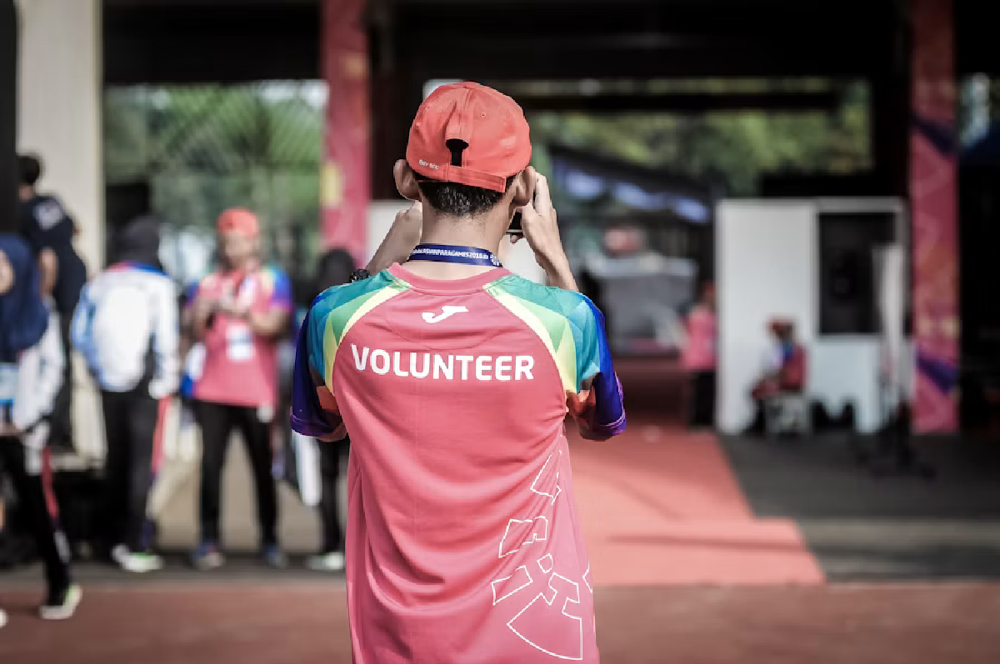

Terceiro setor com presença digital
ONG Esperança Viva
Apoiamos comunidades em situação de vulnerabilidade por meio de doações, campanhas solidárias e participação voluntária.
Quero participar
Campanha ativa
Novos voluntários podem se cadastrar para participar das ações deste mês.
Missão
Nossa missão é conectar pessoas dispostas a ajudar com iniciativas solidárias que promovem acolhimento, cidadania e transformação social.
Como ajudar
Os apoiadores podem contribuir por meio de doações, participação em campanhas sociais ou cadastro como voluntários nas ações realizadas pela ONG.
Contato
E-mail: contato@ongesperancaviva.org
Telefone: (11) 99999-9999
Endereço: Rua da Solidariedade, 100 - São Paulo, SP